From VIP Manager to Team LeadОт VIP-менеджера до Team Lead
Three roles at Redcore, 2024–2026. Pick a step to see what changed.Три роли в Redcore, 2024–2026. Выберите этап, чтобы увидеть, что менялось.
What I launched and what it movedЧто я запустил и что это изменило
11 projects at Redcore. Pick one to see how it works.11 проектов в Redcore. Выберите проект, чтобы увидеть, как он работает.
I build the tools my team needsСам создаю инструменты для команды
With Claude Code and AI models I turn manual operations work into tools that run themselves.С Claude Code и AI-моделями превращаю ручную операционную работу в инструменты, которые работают сами.
CRM offer & compliance extensionCRM-расширение: офферы и compliance
Pulls player data, calculates the offer and checks every action against the rules. Ignored warnings go to the team lead in Slack.Берёт данные игрока, рассчитывает оффер и проверяет каждое действие по правилам. Проигнорированные предупреждения уходят тимлиду в Slack.
+25% compliance · +20% efficiency*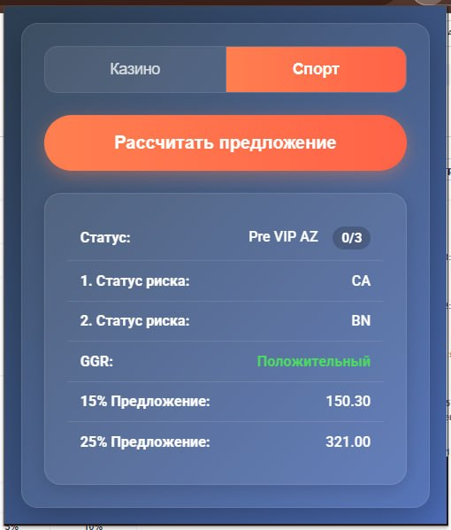
VIP Player Intelligence
An AI tool that reads VIP manager chats, flags violations and risks, and ranks which dialogs a team lead should check first. Responsible gaming signals block deposit incentives.AI-инструмент читает переписки VIP-менеджеров, находит нарушения и риски и ранжирует диалоги для проверки тимлидом. Сигналы ответственной игры блокируют депозитные стимулы.
Gemini · Claude · GPT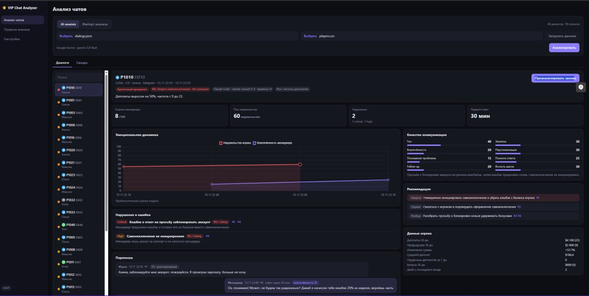
Workflow automationАвтоматизация процессов
CRM, Slack and Telegram triggers for escalations, auto-notifications between departments and break monitoring with coverage alerts.Триггеры в CRM, Slack и Telegram для эскалаций, автоуведомления между отделами и мониторинг перерывов с алертами по покрытию.
+10% resolution speed*This site and my CVsЭтот сайт и мои CV
Built with Claude Code: three languages, two career views and PDF CVs generated from the same content.Сделаны с Claude Code: три языка, два карьерных профиля и PDF-резюме из одного контента.
Before and around RedcoreДо и вокруг Redcore
2026Market Entry Consultant
Freelance · iGaming operator under NDAФриланс · iGaming-оператор под NDAHelped an operator prepare its launch in Azerbaijan.Помогал оператору подготовить запуск в Азербайджане.
- Analysed the market and local player behaviour.Анализировал рынок и поведение локальных игроков.
- Localised the website, UX, internal rules and customer-facing processes.Локализовал сайт, UX, внутренние регламенты и клиентские процессы.
- Advised on local payment infrastructure and payment partners.Консультировал по локальной платёжной инфраструктуре и платёжным партнёрам.
- Helped expand and localise the affiliate network.Помогал расширять и локализовать партнёрскую сеть.
2026Customer Support Specialist (L1, AZ line)
Adviva · iGamingFirst-line support for Azerbaijani-speaking players.Первая линия поддержки азербайджаноязычных игроков.
- Answered players in chat and email on accounts, deposits and withdrawals, bonuses and verification (KYC).Консультировал игроков в чате и по e-mail: аккаунты, депозиты и выводы, бонусы и верификация (KYC).
- Resolved routine requests within SLA and quality standards.Решал типовые обращения в рамках SLA и стандартов качества.
- Logged cases in the CRM and escalated complex ones to L2, Payments and Risk.Вёл тикеты в CRM и эскалировал сложные кейсы на L2, Payments и Risk.
Mar – Sep 2026мар – сен 2026Game Designer & Project Lead
Yourline StudiosShipped two mobile games and led a team of 5.Выпустил две мобильные игры и руководил командой из 5 человек.
- The same reward psychology shows up in Meowsweeper's combo scoring and end-of-level rewards.Та же психология наград есть в комбо-множителе и наградах за уровень в Meowsweeper.
2020 – 2023EarlierРанее
Goafaz.com · Techevo ComputersIn-game currency payments, then sales and team leading.Платежи за внутриигровую валюту, затем продажи и руководство командой.
Sales Manager → Team Leader
Techevo Computers · 2021 – 2023- Grew from salesperson to team leader; owned P&L and the sales plan.Вырос от продавца до руководителя; отвечал за P&L и план продаж.
- Led a team across sales, SMM and helpdesk.Руководил командой продаж, SMM и техподдержки.
- Launched custom gaming PCs and gaming accessories; ran B2B fit-outs for internet cafés.Запустил кастомные игровые ПК и аксессуары; вёл B2B-проекты по оснащению интернет-клубов.
Transaction Processing & Support SpecialistСпециалист по транзакциям и поддержке
Goafaz.com · in-game currency store (PUBG UC, Robux)магазин внутриигровой валюты (PUBG UC, Robux) · 2020 – 2021- Processed in-game currency orders and customer balances in admin systems.Обрабатывал заказы внутриигровой валюты и балансы клиентов в админ-системах.
- Monitored P2P payments in real time with the Payments team.Контролировал P2P-платежи в реальном времени вместе с Payments.
- Ran first-line anti-fraud checks on payment proofs.Проводил первичный антифрод-контроль платёжных подтверждений.
Games I designed and shippedИгры, которые я спроектировал и выпустил
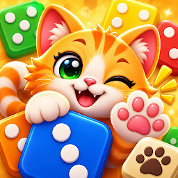
Meowsweeper: Find the Cats
A logic puzzle I built solo and shipped in about a month.Логический пазл, который я сделал соло и выпустил примерно за месяц.
DetailsПодробнее
- Two clues per tile: the die counts cats at the sides, the colour counts cats in the corners. No guessing; every level is solver-verified.Две подсказки на клетке: кубик считает котов по сторонам, цвет — в углах. Без угадывания, каждый уровень проверен солвером.
- 300+ levels on a difficulty curve built from data on reference games, then tested and ordered by hand.300+ уровней на кривой сложности из данных референсных игр, затем протестированы и расставлены вручную.
- Solo in about a month: design, Unity, UI in Figma, release, AI-made ads and a CPI test in four countries.Соло примерно за месяц: дизайн, Unity, UI в Figma, релиз, реклама с ИИ и CPI-тест в четырёх странах.
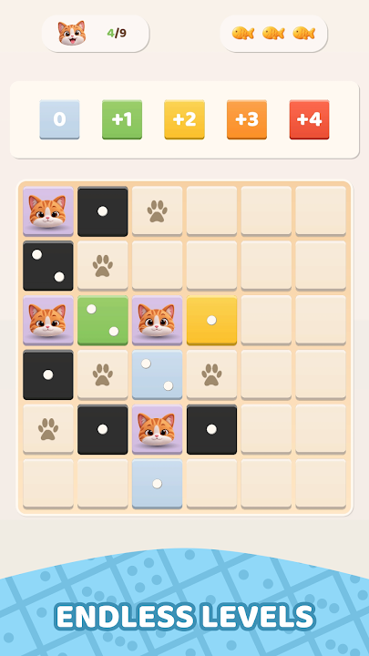
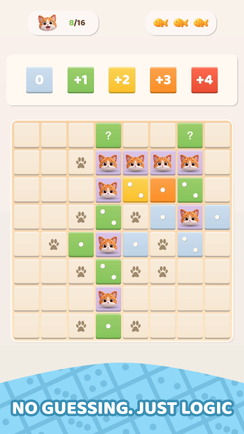
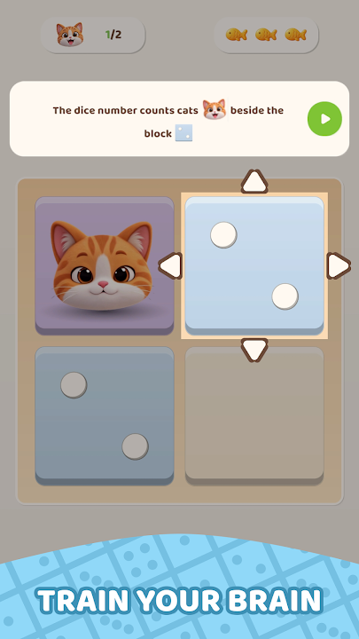
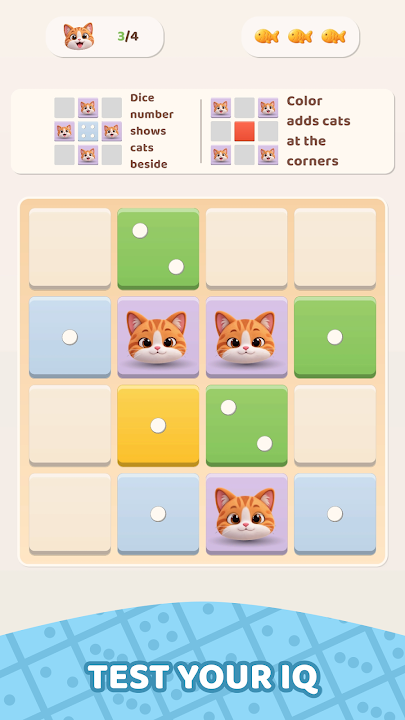
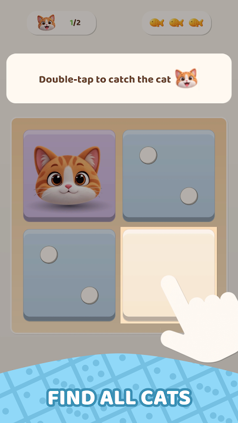
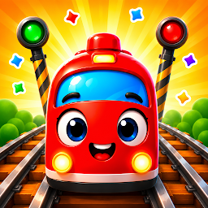
Train Out
A puzzle game I took over when it was stuck and delivered to the publisher.Пазл, который я принял застрявшим и сдал издателю.
DetailsПодробнее
- 50 original levels with a difficulty curve; new mechanics arrive one at a time.50 оригинальных уровней с кривой сложности; новые механики вводятся по одной.
- HTML level editor I wrote; every release level was built in it.HTML-редактор уровней, который я написал; все релизные уровни собраны в нём.
- Rescued a project stalled for 2 months and delivered a polished MVP in 2 weeks.Спас проект, стоявший 2 месяца, и за 2 недели сдал отполированный MVP.
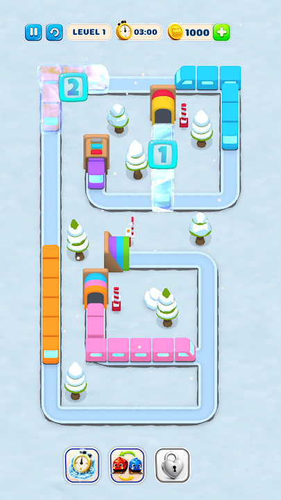
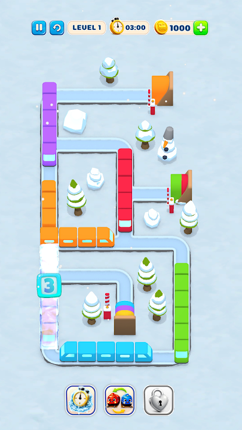
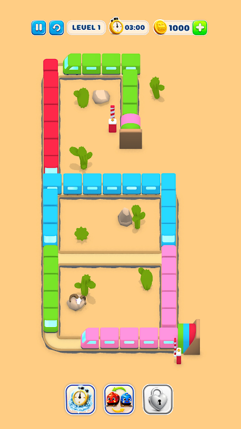
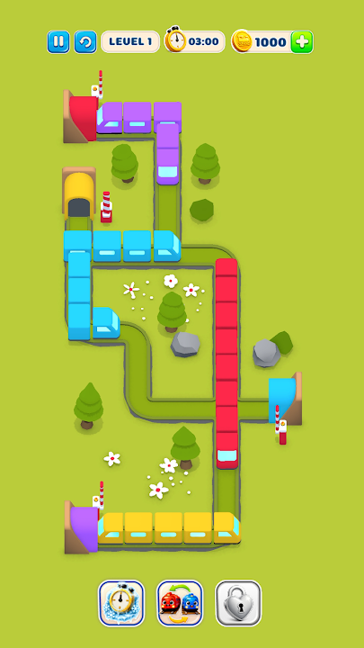
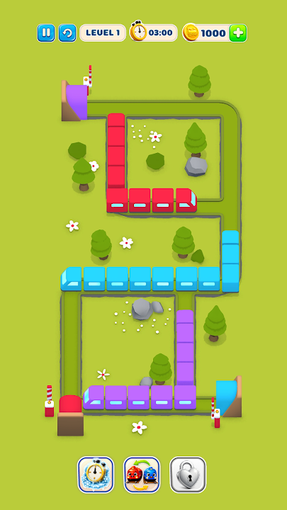
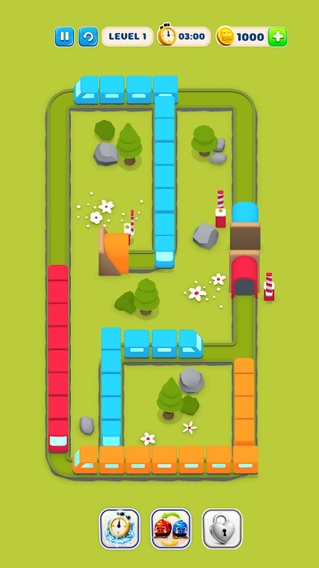
UFO Evolve
A hybrid-casual concept taken to a playable build.Hybrid-casual концепт, доведённый до играбельного билда.
DetailsПодробнее
- Concept: slingshot a UFO around a spherical planet and paint the ground it flies over. Upgrade between launches.Концепция: НЛО запускается рогаткой вокруг сферической планеты и закрашивает землю. Апгрейды между запусками.
- Twist on Car Evolve: a sphere instead of a track, exploration instead of distance.Отличие от Car Evolve: сфера вместо трассы, исследование вместо дистанции.
- My part: design, Unity with AI help, UI in Figma, paired with a 3D artist.Моя роль: дизайн, Unity с помощью ИИ, UI в Figma, в паре с 3D-художником.
Play them hereИграйте прямо здесь
Each went from idea to playable build in days, in HTML5 with Claude Code.Каждый — от идеи до играбельного билда за дни, на HTML5 с Claude Code.
Crosswalk Rush
Traffic puzzle with its own level editor.Пазл с трафиком и своим редактором уровней.
Fast Food Rush
Sorting and packing puzzle with a level editor.Пазл на сортировку и упаковку с редактором уровней.
Pizza Rush
Small tycoon loop: orders, cooking, upgrades.Маленький tycoon: заказы, готовка, апгрейды.
Stretchy Cat
3D stretch-to-fill puzzle with a level editor.3D-пазл «растяни и заполни» с редактором уровней.
Fruit Loop
Fruit sorting prototype. Build on request.Прототип сортировки фруктов. Билд по запросу.
GDD libraryБиблиотека GDD
Specs, acceptance criteria and level rules in Notion.ТЗ, критерии приёмки и правила уровней в Notion.
Idea to store in a monthОт идеи до стора за месяц
AI handles code, data and assets. Design decisions, tuning and hand testing stay with me.ИИ берёт на себя код, данные и ассеты. Дизайн-решения, тюнинг и ручное тестирование остаются за мной.
Solvers and level dataСолверы и данные уровней
AI-built solvers for reference games gave the data for Meowsweeper's difficulty curve and verified that every level is fair.AI-солверы для референсных игр дали данные для кривой сложности Meowsweeper и проверили честность каждого уровня.
Unity with Claude MCPUnity с Claude MCP
Whole Unity projects assembled with Claude MCP, so one designer can ship a game without a dedicated programmer.Целые Unity-проекты собраны с Claude MCP: один дизайнер может выпустить игру без отдельного программиста.
Ad creatives and playablesКреативы и playable-реклама
AI-made video ads and an HTML playable ad for the CPI test: $0.11 CPI at 14% CTR.Видео и HTML playable-реклама с ИИ для CPI-теста: CPI $0.11 при CTR 14%.
Prototypes in daysПрототипы за дни
Five HTML5 prototypes and Train Out's level editor, built with Claude Code.Пять HTML5-прототипов и редактор уровней Train Out, сделанные с Claude Code.
Where I did itГде я это делал
Mar – Sep 2026мар – сен 2026Game Designer & Project Lead
Yourline Studios · mobileShipped two mobile games and led a team of 5.Выпустил две мобильные игры и руководил командой из 5 человек.
- Games: shipped Meowsweeper and Train Out; took UFO Evolve to a playable build.Игры: выпустил Meowsweeper и Train Out; довёл UFO Evolve до играбельного билда.
- Team: led a 3D artist, two developers, a generalist and a UI designer: planning, priorities, task tracking and QA.Команда: руководил 3D-художником, двумя разработчиками, generalist и UI-дизайнером: планирование, приоритеты, трекинг и контроль качества.
- Publisher: main contact with Studio Apps (Turkey) on milestones, deadlines and UI/UX handoffs in Miro.Издатель: основной контакт со Studio Apps (Турция) по milestone, срокам и передаче UI/UX в Miro.
- Process: set up the GDD system in Notion and tracking in Trello; wrote specs and acceptance criteria; rewrote the privacy policy for the stores.Процессы: выстроил систему GDD в Notion и трекинг в Trello; писал ТЗ и критерии приёмки; переписал политику конфиденциальности под сторы.
- The studio closed in September 2026.Студия закрылась в сентябре 2026.
2024 – 2026Before games: iGamingДо геймдева: iGaming
Redcore · VIP Manager → Team LeadDesigned retention mechanics for VIP players.Проектировал механики удержания для VIP-игроков.
- Tournaments, a bonus ladder, profile gamification and reactivation, each measured on retention and deposits.Турниры, бонусная лестница, геймификация профиля и реактивация, каждая механика измерена по retention и депозитам.
- The same reward psychology shows up in Meowsweeper's combo scoring and end-of-level rewards.Та же психология наград есть в комбо-множителе и наградах за уровень в Meowsweeper.
Let's keep your players coming back.Давайте сделаем так, чтобы игроки возвращались.
Let's make your next game.Сделаем вашу следующую игру.
Open to roles remotely or with relocation.Открыт к предложениям: удалённо или с переездом.